The Backhand Volley¶
John Yandell¶
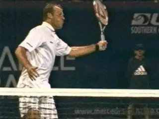
Forehand and backhand volleys: basic similarities, basic differences.
How different are the forehand and backhand volleys? It's a fascinating and complex question. The fact is that there are fundamental similarities and fundamental differences. (link for the forehand article.)
We saw on the forehand volley that the shape of the hitting arm was a critical component of the technical swing pattern. When it comes to the backhand volley this is equally true. [Understanding the hitting arm shape and how to use it is the secret to establishing and mastering the stroke.]
A second fundamental is also the same on the two volleys. This is [the role of the shoulders and the feet in the preparation, or unit turn, that starts the motion.] These factors are interrelated and happen together.
Differences
[But there are also two fundamental differences between the forehand and backhand volleys. The first is the amount of spin.] [The second is the direction of the swing plane.] These differences have led to a lot of confusion in learning and executing the two strokes.
Forehand volleys in pro tennis average less than 1000rpm of spin. But in general, the backhand volleys average more than twice that, or over 2000rpm. (link.)
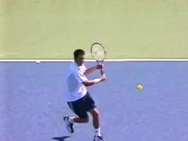
The backhand volley: more spin and a more downward swing plane.
[The spin differential is directly related to the second difference, the angle of the swing plane.] The swing plane on the forehand volley is flatter, more in line with the direction of the shot. But the swing plane on the backhand volley is normally more sharply downward. Because of this, in some ways, the feeling of the two shots can be very different.
The problem is that many players have one feeling or the other, and apply it on both sides. This means they end up either hitting downward too much on the forehand volley, or hitting through the backhand volley on too straight a line.
And yes, it's a matter of degree, because both components are present in virtually all volleys. But understanding how to combine them in the right balance is what makes a given volley effective.
So let's go through the backhand volley, break it down step by step, and see how all the components fit and work together.

We can understand the backhand volley grip in terms of the relationship between the racket handle bevels, the index knuckle and the heel pad.
Grip
As we saw on the forehand, there is a limited range of volley grips used by the top players. Virtually every top player uses some version of a continental or mild eastern grip on both sides. But the grip can still be a controversial issue.
Once again we can refer to the grip terminology we've developed to describe how the hand connects with the racket on all strokes. The issue is how a player positions the index knuckle and the heel pad in relation to the bevels on the grip.
It would be hard to be precise without walking out on the court and grabbing Tim Henman or Roger Federer by the racket hand, but it appears that the strongest volley grips in the pro game are around a 2 / 1.
This means the index knuckle is on the second bevel from the top, and the heel pad is mainly on the top of the frame, or bevel 1. But even these players look like they slide part of the heel pad off Bevel 1 and slightly toward the second bevel.

Hard to define precisely, but some version of a mild backhand grip.
Many players use a slightly milder grip, more like a 2 1/2 / 1 1/2. This means the heel pad is at most halfway on top of the frame, sometimes less, and the index knuckle is straddling the edge between bevels 2 and 3. In my experience this milder grip works the best for most players. But there is a range and every player should experiment until he finds the grip that works best going back and forth between the two sides.
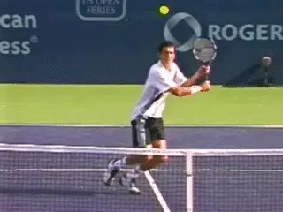
Do the top players make subtle grip shifts? Are they invisible?
Many knowledgeable observers argue, however, [that the top players actually use different grips at the net, shifting how they hold the racket at least slightly from ball to ball, and it's probably true. It's just difficult or impossible to see in the video.]
Would it make sense to rotate the hand a little more toward the top to hit a shoulder high, relatively flat backhand volley? Yes. Or go the other way slightly on a low ball to hit with a little more slice? Yes, again.
What about the forehand versus the backhand side? In general could you hit many forehand volleys with a grip shifted slightly toward the forehand side? Probably true as well. There are really two questions here. Do the top players shift the grip? And, if so, is it a conscious adjustment?
And what about the idea of at least starting out with two distinct grips--shifting from a forehand grip to a backhand grip and back when you are learning?
My experience is that some players can learn a single volley grip and hit effectively on both sides literally from the first ball. But others have real problems, usually on the forehand side. Due to the slightly flatter nature of the swing, they end up chopping down too much with any version of a backhand grip.
Conversely, some players will get the feeling for the hitting arm position on the backhand volley much faster if they start with a slightly stronger backhand grip.
So in my view, it's not a black and white issue, but in the long run you want to settle on one volley grip that you can use on both sides. As for the slight adjustments, you can experiment in practice to get the feeling of how they improve your leverage or ability to generate underspin on various balls. But in match play any changes will probably have to take care of themselves.
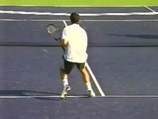
The body turn and the set up with the hitting arm position.
Preparation
As with the forehand volley--or the groundstrokes for that matter--the backhand volley begins with a unit turn. The exact pattern of the steps can vary depending on the path of the player and the oncoming ball, but basically the feet and shoulders turn sideways as a unit. Because the players are moving in, this step is sometimes forward, with the front foot pointing at an angle toward the sideline.
Compared to the forehand volley the shoulder turn is usually a little stronger. The line of the shoulders at the completion of the turn can be 60 degrees up to about 90 degrees to the net depending on the ball. This is compared to about 45 degrees or possibly 60 degrees on most forehands.
Open U Hitting Arm
The second component in the preparation is establishing the hitting arm shape. On the forehand volley article we saw that the hitting arm is configured into an Open U shape. The shape of the backhand volley hitting arm is essentially the same.
The characteristic U shape with the upper arm and racket at about a 45 degree angle to the forearm.
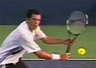
The forearm forms the base of the U, with the racket and upper arm forming the legs, angled at roughly 45 degrees to the base. The opposite arm cradles the racket at the throat, and helps to create this shape and position the racket.
It's easiest to see the U shape when the forearm is parallel to the court or close to it. But if you study the examples in the high speed archive, you'll see this shape around the contact on virtually every pro backhand volley. (link.)
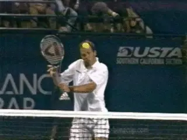
Watch the hitting arm shape stay in tact and move almost directly forward through contact.
The hitting arm position is critical because it is what allows the player to drive the forward swing from the front shoulder. From this position you can see how the front shoulder or deltoid muscles move the racket and hitting arm to the contact. The shoulder stays in position and the hitting arm structure moves forward as a unit.
You can see this most clearly on flatter volleys closer to the net. Although these are relatively rare, you can see a virtually pure example in the Rusedski animation. Watch how the hitting arm structure is unchanged and how the hitting arm and racket travel basically forward from just before until just after contact.
As with the one-handed groundstrokes, this forward motion is combined with the movement of the left arm backwards in the opposite direction. This opposition of the arms is what helps keep the torso sideways, essentially at the same angle to the net as at the completion of the turn. The contact point itself will be only slightly in front of the plane of the shoulders.
This critical forward hitting arm motion is very hard to see, taking only fractions of a second and comprising only a few frames even in high speed video. But mastering it is critical. To help show it I've isolated it further in another animation, again or a volley that is hit virtually flat. Watch the forward, unitary movement of the hitting arm structure using the front shoulder muscles.
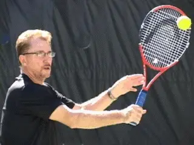
A closer look at the forward motion of the hitting arm from the shoulder.
In my experience, for most players to build a solid motion, it's necessary to restrict this additional arm motion as much as possible in creating a basic model. Often it's necessary to hit the ball almost totally flat as in the animation to really feel how this works.
Is it a Punch?
Which brings us to the two most common volley tips. Because the hitting arm and racket move forward from the shoulder, the concept of "punching" the volley doesn't make much sense on the backhand volley. The fist is pointed basically to the sideline once the player sets up the hitting arm shape.
A "punch" would imply that the fist would explode in that direction, with the arm extending toward the sideline, staying parallel to the net. That of course would eliminate the forward movement to the ball. If you still want to think of the motion as some type of blow, however, think of it as a backhanded slap.
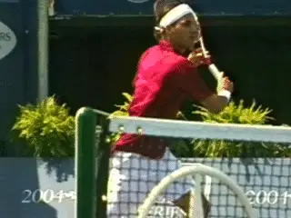
How accurate are the most common volley "tips"
Is It Firm?
The idea of keeping the wrist somewhat firm however, applies much better on the backhand volley than the forehand. Why? Because on the forehand the palm of the hand is behind the handle, pushing the racket. On the backhand volley, the hand and palm are on the opposite side of the handle, closest to the ball, at least partially. Of course you don't want to be stiff or rigid on any stroke, but I think a little "firmness" here is important to keep the shape of the hitting arm in tact.
The Backswing
I feel that it is very important to develop a feeling for the role of the hitting arm using the compact model outlined above. But the reality is that few backhand volleys are hit with just this basic forward motion and/or virtually flat. Most are hit with substantial backswings and high levels of underspin. That's one of the things that sets the backhand volley apart from the forehand as we noted.
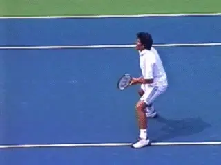
Two backswing factors: raising the hand and hitting arm, and rotating them backwards from the shoulder.
So let's see how to combine the hitting arm shape and movement with the backswing and the creation of underspin. As the unit turn starts, the players begin to set up the hitting arm position almost immediately. The players typically reach the Open U position when the racket reaches the front edge of the body, and sometimes before.
This is where the additional backswing begins. There are two components. First the players raise their hands and the entire hitting arm structure, usually keeping the shape in tact. Then the rotate the hitting arm backwards in the shoulder joint. This is what opens the angle of the face of the racket.
On very high balls you sometimes see the racket tip extend well beyond the rear edge of the body before the start of the forward swing. But the hand itself rarely goes back further than the middle or the torso. At most it may reach the rear edge of body. (More on this in the next article.)
The position of the racket tip is due to the increased backward, or external rotation of the hitting arm in the shoulder joint. You see some version of this elevation and rotation of the hitting arm on the majority of backhand volleys at all levels.

The combined forward and downward movement to the contact.
The Forward Swing
We are now in a position to see how the backswing and hitting arm structure work together in the forward swing. The motion of the hitting arm forward from the shoulder is driving the motion. But by raising the hand and hitting arm structure, and rotating them backward, the players set the racket face open and above the oncoming ball.
The difference is that the plane of the swing is now downward, compared to the simpler flat model. This combination of the downward swing and slightly opened racket face is what produces the underspin at a level that sometimes equals that of the pro groundstrokes. The difference with the basic forward motion is that the plane of the movement is now on a diagonal that is downward as well as forward.
The amount of downward and forward movement can be mixed in many combinations. The player can take a slightly lower or higher backswing. He can rotate the hitting arm structure backward a little more or a little less. The forward swing plane can be angled slightly more downward or slightly more outward.
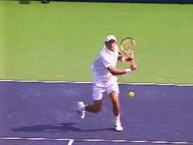
Sometimes the elbow extends fully, other times not.
Elbow Extension
Which brings us to another complexity. Often as the racket starts forward down, the elbow straightens out. Many analysts and coaches identify this as the critical movement in generating the hit. I think the high speed video shows something else.
Sometimes the elbow straightens completely by contact. Sometimes it straightens out after. On some balls however, the elbow stays bent throughout the forward swing, or it straightens only partially. It possibly adds racket head speed (or not), but since it is only present on a percentage of backhand volleys, we have to consider it a secondary or supplemental movement.
Cupping
One final point to understand is what often happens to the angle of the racket face after the contact. We saw the same issue on the forehand volley. On many balls the racket face appears to open, even going parallel to the court as it moves through the contact. This is sometimes called "cupping" the volley.
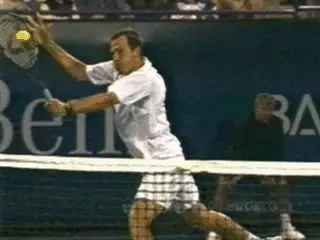
Watch the racket face bevel and slide open after the hit.
[What the high speed video shows is that this is a consequence. Some combination of the angle of the racket face, the angle of the swing plane, and the force of the ball at contact, can cause the racket face to deflect. But let this happen naturally if at all. The underspin is coming from the swing plane and the angle of the racket face at contact.]
So there we have the elements in the basic backhand volley. The foundation is understanding how to set up and move the hitting arm through the shot as a unit. It may be hard to see in the high speed footage, but this element there in every pro backhand volley in our archive. Once you develop your own feel for it, you'll know exactly why that is.
Next, we'll look more at full range of variations on the backhand volley. Stay Tuned.

John Yandell is widely acknowledged as one of the leading videographers and students of the modern game of professional tennis. His high speed filming for Advanced Tennis and TPA have provided new visual resources that have changed the way the game is studied and understood by both players and coaches. He has done personal video analysis for hundreds of high level competitive players, including Justine Henin-Hardenne, Taylor Dent and John McEnroe, among others.
In addition to his role as Editor of TPA he is the author of the critically acclaimed book Visual Tennis. The John Yandell Tennis School is located in San Francisco, California.